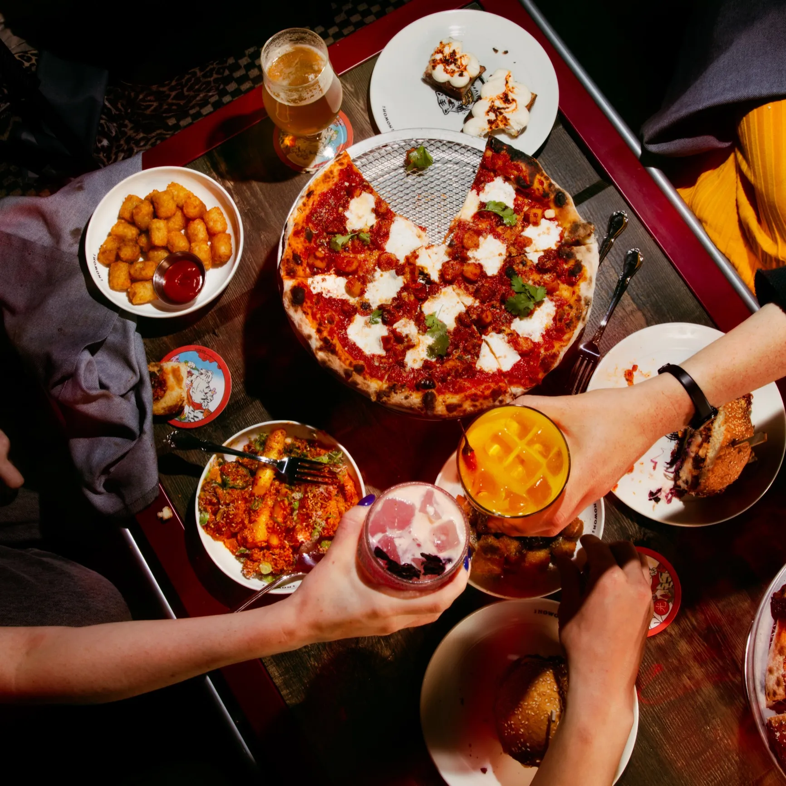
Nowon
East Village, BushwickKorean-American comfort food with bold flavors, known for its legendary chopped cheese rice cakes and creative cocktails.
Where locals actually eat. This guide is for travelers who want authentic flavor, not overpriced tourist menus. Whether you are dining solo, with friends, or on a budget, you will find spots worth the trip.

Korean-American comfort food with bold flavors, known for its legendary chopped cheese rice cakes and creative cocktails.
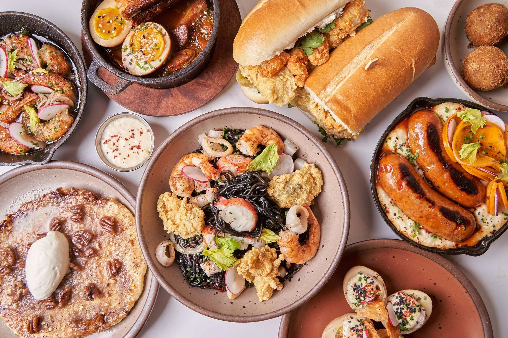
A mashup of Korean and Cajun influences with standout jambalaya fried rice and rotating market-driven specials.
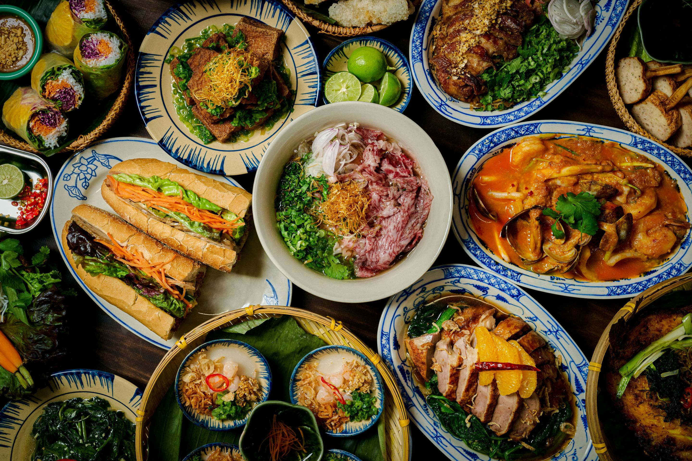
Vietnamese restaurant serving deeply flavored noodle soups, grilled meats, and central Vietnam regional specialties.

Small and highly rated sushi spot with quality fish, omakase-style sets, and quick service near Penn Station.
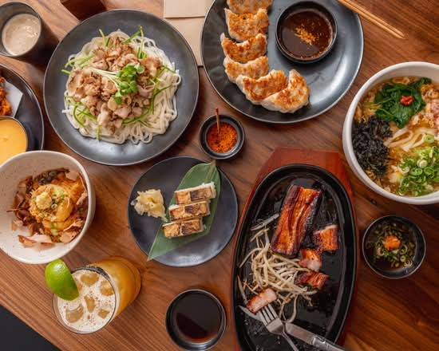
Beloved udon restaurant making silky noodles in-house, with rich broths and seasonal Japanese small plates.
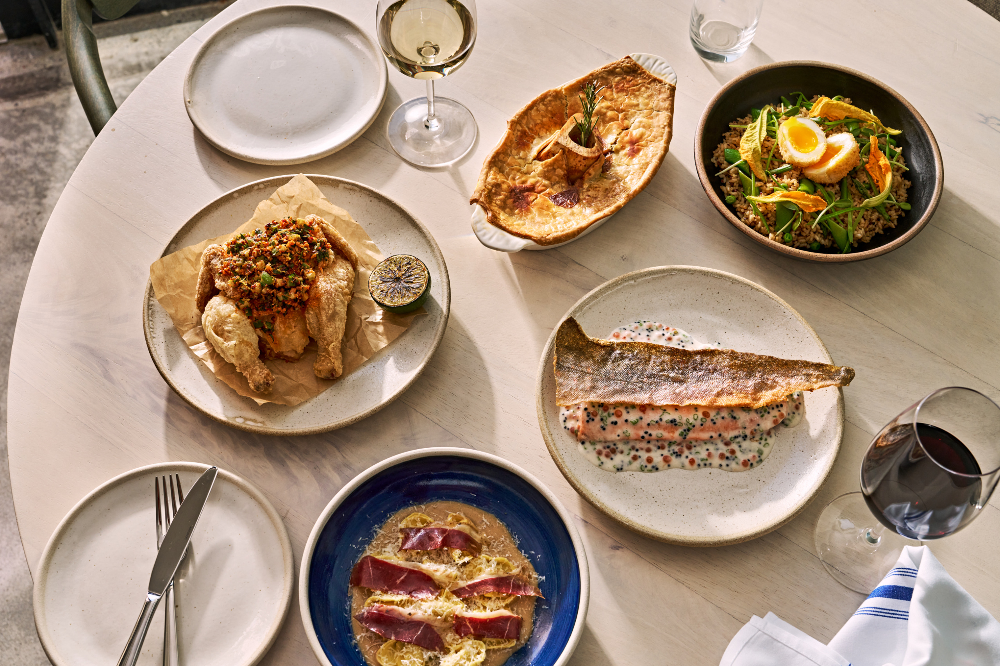
Stylish neighborhood restaurant with Japanese-influenced dishes, strong natural wine picks, and a lively dinner vibe.

Contemporary Vietnamese cooking from the Di An Di team, featuring shareable plates and bold herb-forward flavors.
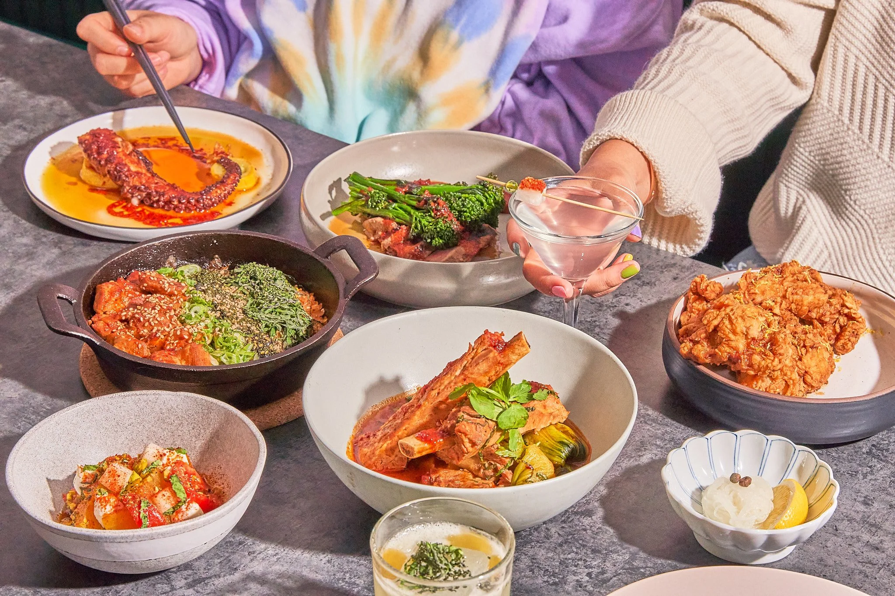
Modern Korean restaurant known for inventive small plates, handmade noodles, and a thoughtful natural wine list.
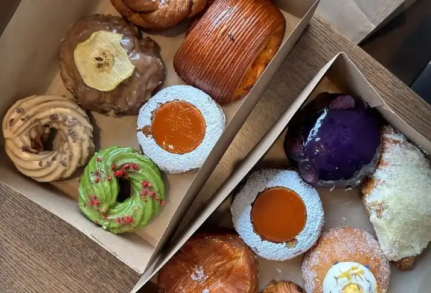
Filipino-inspired donut shop known for rotating flavors, brioche dough, and creative seasonal fillings.
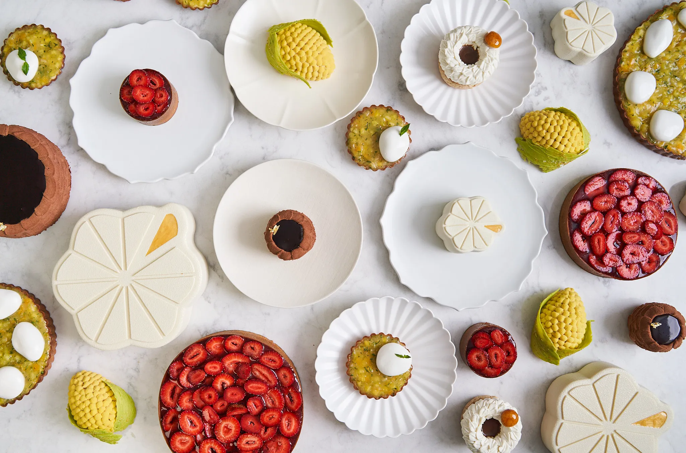
Refined Korean-French dessert salon with beautifully plated pastries, cakes, and tea-time treats.

Neighborhood favorite for laminated pastries, savory bakes, and naturally leavened breads.
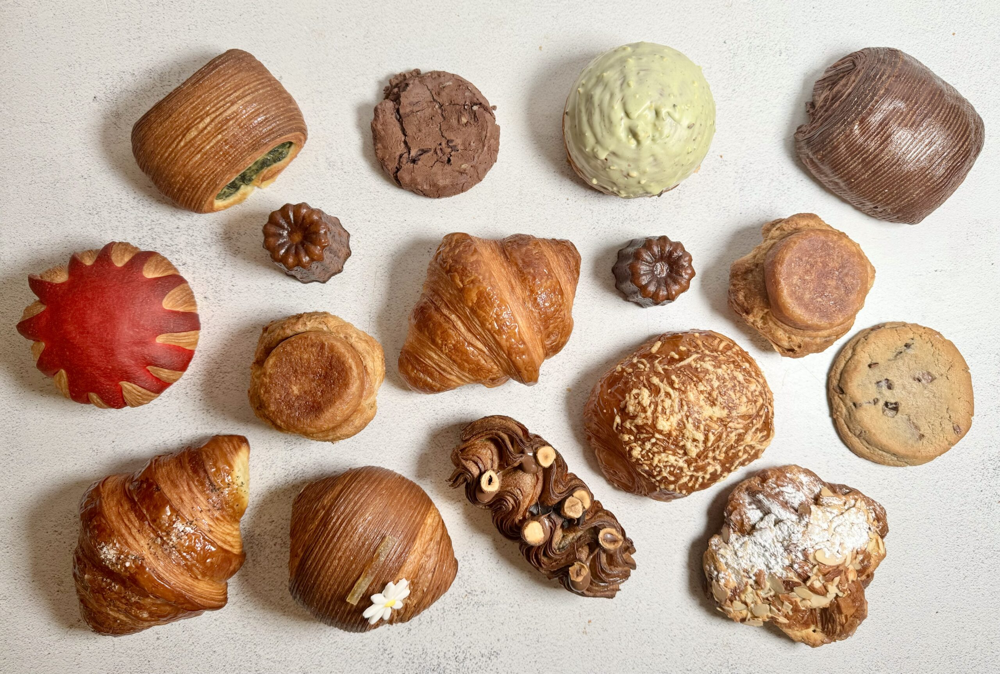
Inventor of the Cronut, offering inventive pastries and a rotating lineup of creative baked desserts.
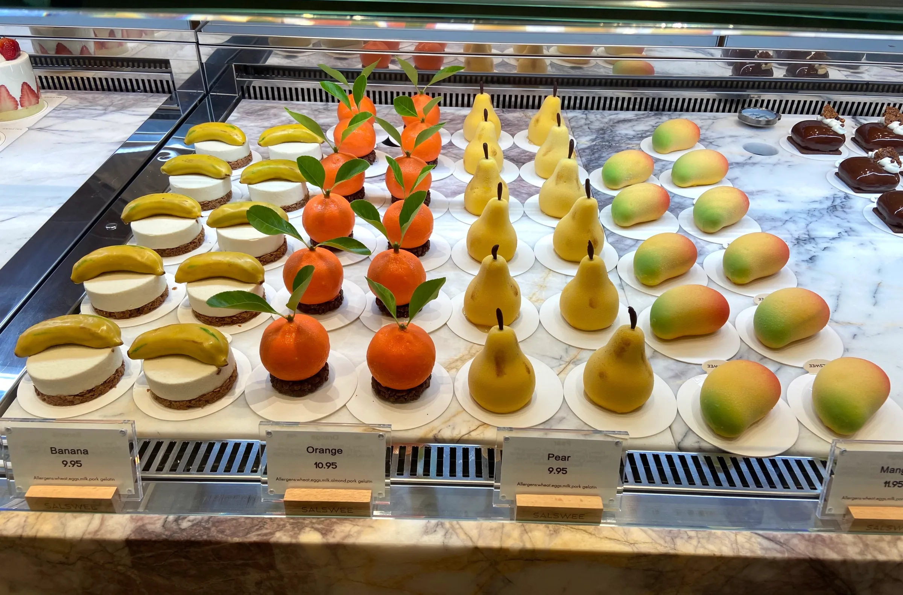
Modern Korean bakery and cafe with elegant cakes, cream-filled pastries, and seasonal dessert specials.
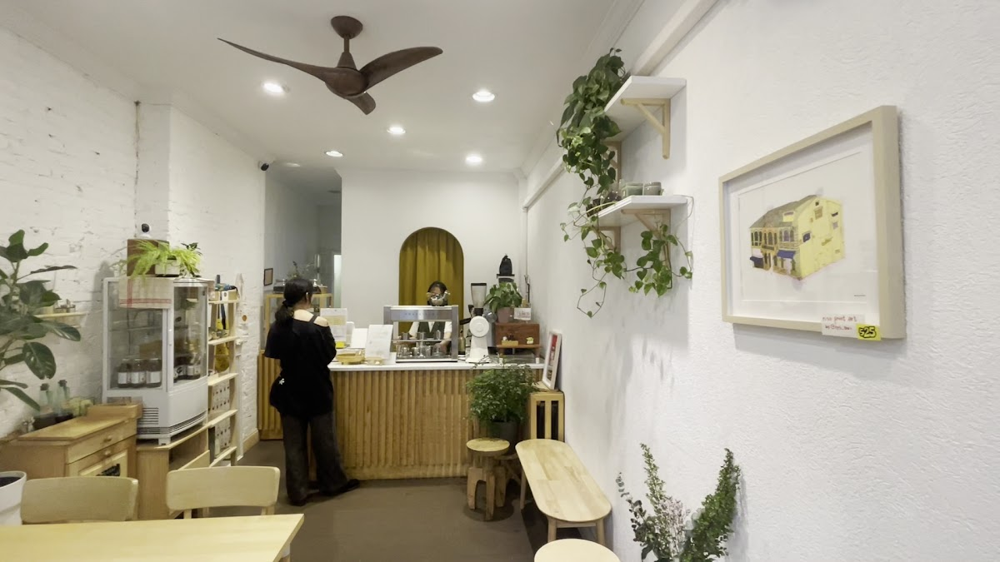
Vietnamese coffee shop serving rich phin-brewed drinks, matcha, and a calm minimalist atmosphere.
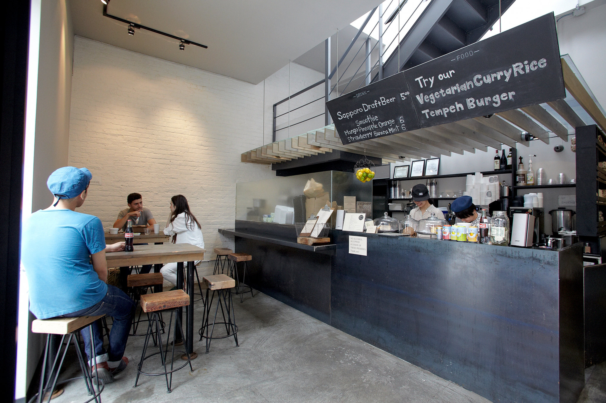
Cozy cafe best known for specialty drinks and chewy rice-ball donuts in unique seasonal flavors.
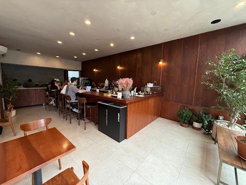
Sleek neighborhood coffee bar with carefully brewed espresso drinks and a strong pastry program.
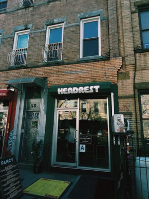
Stylish Brooklyn cafe with excellent espresso, rotating beans, and a laid-back neighborhood feel.
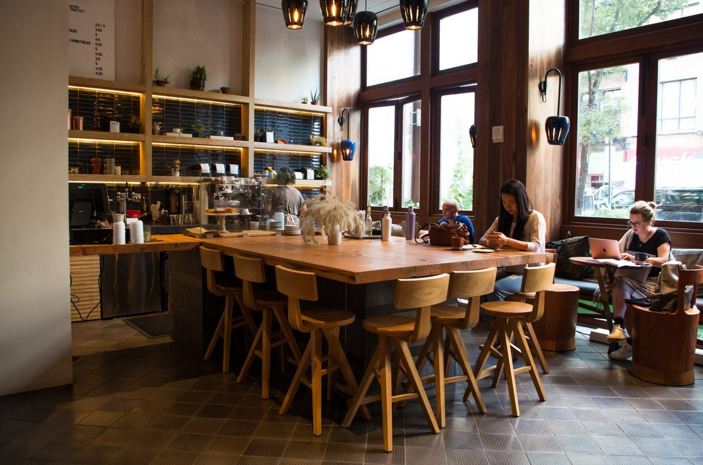
Design-forward cafe inside The Ace Hotel serving quality espresso, pour-overs, and seasonal drinks.
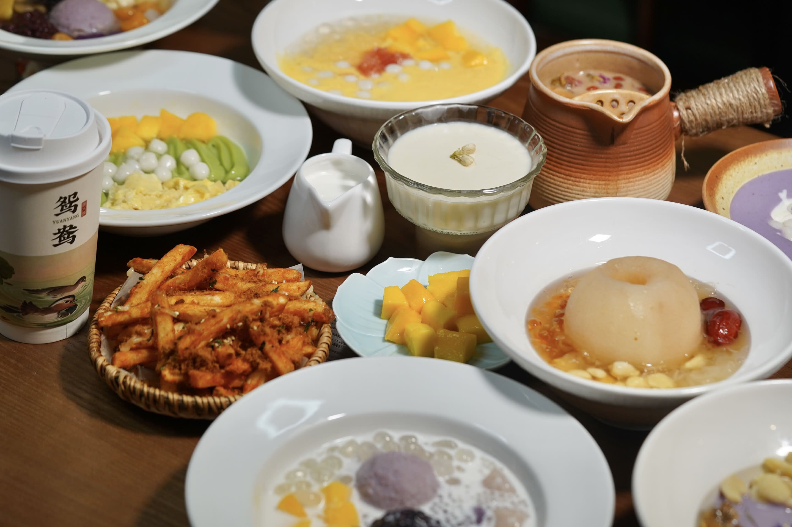
Popular spot for Hong Kong-style sweet soups, tofu pudding, and warm dessert bowls.
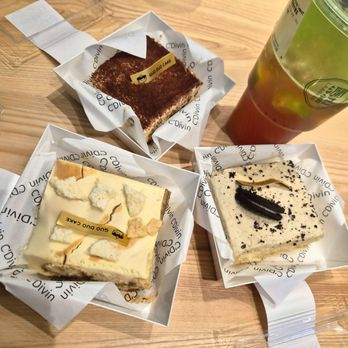
Chinese bakery specializing in soft sponge cakes, fruit-topped cream cakes, and celebratory desserts.
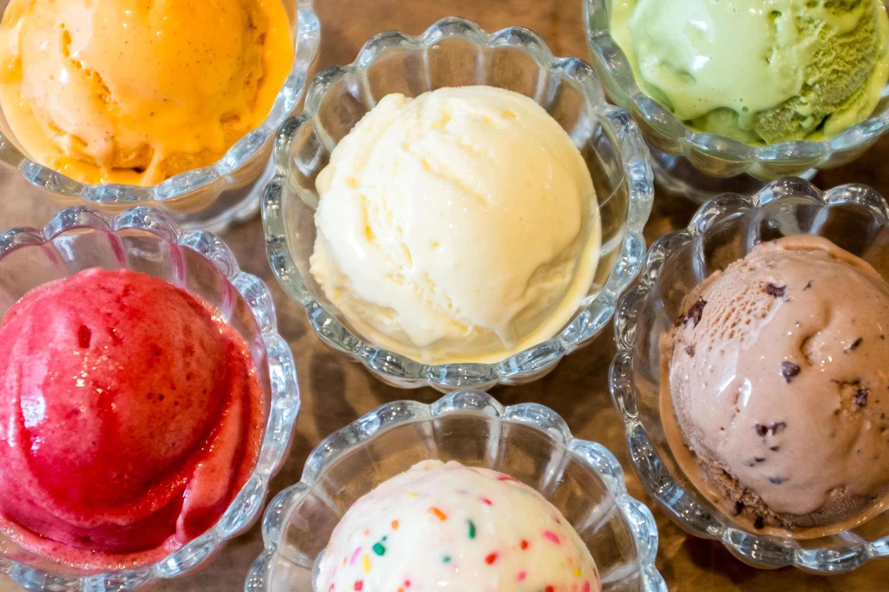
Inventive ice cream shop with bold flavors, rotating seasonal specials, and fun sundae options.

Chinatown dessert cafe known for beautifully plated sweets and thoughtfully crafted specialty drinks.
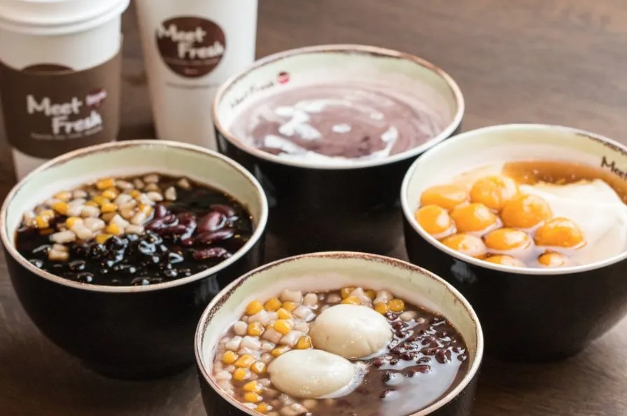
Taiwanese dessert chain famous for taro balls, shaved ice, herbal jelly, and customizable sweet bowls.
No spots in this category yet. Try another filter.
Pair these food spots with nearby attractions or see the neighborhoods come alive in the photo gallery.